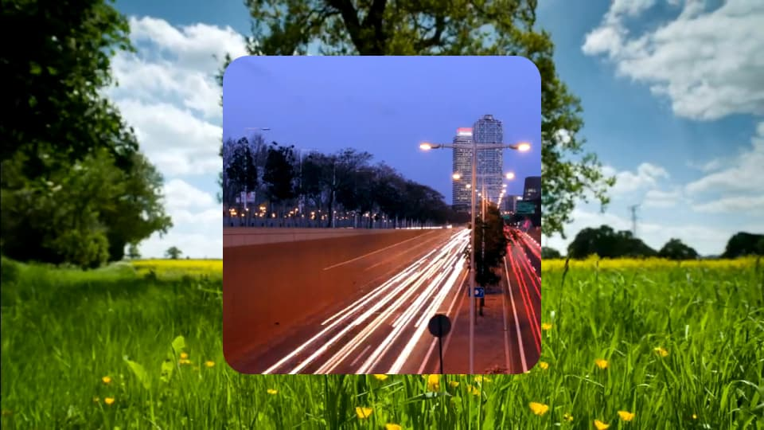
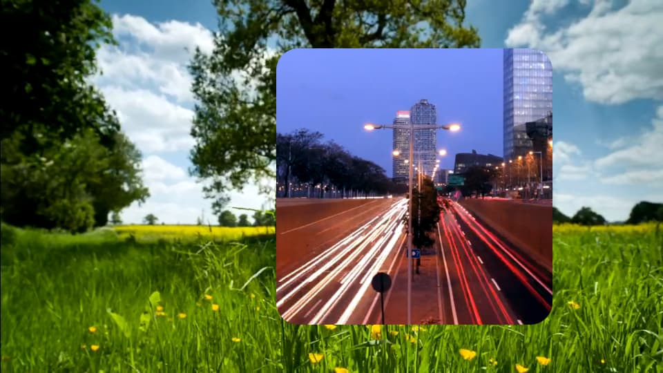
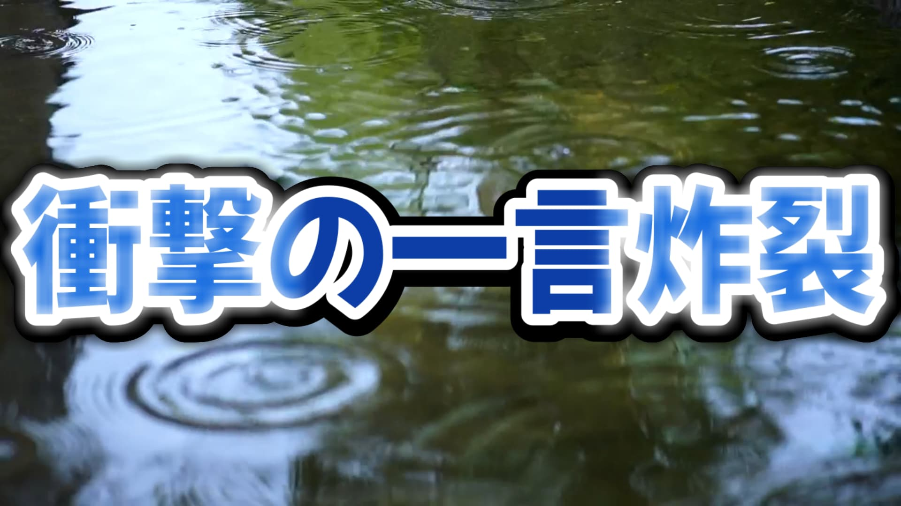

4 フィルタ（映像）
4.1 フィルタについて
「1 基本操作」のなかで、Shotcutのような動画編集ソフトでは、取り込んだ素材を「どのタイミングで表示・再生させるか」のほかに「どのように表示・再生させるか」を決めていくことによって、動画を仕上げていくと説明しました。
素材を「どのように表示・再生させるか」は、クリップに対してさまざまな効果を付ける機能を利用することで設定できます。Shotcutでは、そうしたクリップに何らかの効果を付ける機能のことを「フィルタ」と呼びます。
フィルタは、クリップのほか、トラックやタイムライン全体を選択してかけることもできます。しかし、以降の説明では、基本的にクリップに対して適用するものとして紹介しています。
「3 トランジション」で紹介した、テキストボックスをつくる「テキスト：シンプル」や、映像をフェードインさせる「映像のフェードイン」なども、フィルタの一種です。Shotcutに実装されているフィルタには、この資料で紹介するもの以外にもたくさんの種類がありますが、ここではとくに使用頻度の高そうなものだけを紹介します。
クリップにフィルタを適用するには、まず、フィルタを適用したいクリップを選択した状態で、画面左上のパネルにある「フィルタ」タブを開きます。それから「」というアイコンをクリックすると、フィルタの一覧が表示されるので、そのなかから必要なフィルタを一つずつ選択します。
また、クリップに適用されているフィルタを削除するには、同様に「フィルタ」タブを開いてから、削除したいフィルタをクリックして選択し、「」というアイコンをクリックします。
4.2 サイズ・位置・回転
実際にフィルタを適用するようすを見てみましょう。
ここでは、試しに「サイズ・位置・回転」というフィルタを適用しています。「サイズ・位置・回転」は、文字通り、クリップのサイズや位置を変えたり、クリップを回転させたりできるフィルタです。具体的には、次のような値を調整することで、クリップの表示のされ方を調整することができます。
- 位置
- サイズ（プレビューのなかでマウスホイールを回転させることでも調整できます）
- 縮小拡大（この値は「サイズ」の値と連動します）
- 回転（プレビューのなかでCtrlキーを押しながらマウスホイールを回転させることでも調整できます）
多くのフィルタは、「フィルタ」タブでそれぞれのフィルタを選択すると表示されるメニューから、そのフィルタに固有の値を調整することによって、効果の効き具合を変えられます。ちなみに、調整した値をデフォルト値にリセットするには、それぞれの値の右横にある「」というアイコンをクリックします。
フィルタのなかでも、「サイズ・位置・回転」のような位置やサイズを調整可能なフィルタについては、そのフィルタのプレビューをマウスで直接操作することによっても、位置やサイズを調整できます。そうしたフィルタとしては、「サイズ・位置・回転」のほか、すでに紹介した「テキスト：シンプル」や、この後で紹介する「切り抜き」などが該当します。
クリップを選択しても、再生ヘッドは選択したクリップがある位置には移動しません。フィルタを適用するときには、フィルタが適用された結果を確認するために、再生ヘッドも忘れずに移動するようにしましょう。
プレビューを見ながら位置合わせをするときには、上の例のなかでやっているように、グリッドを表示させると便利です。
グリッドを表示させるには、プレビューが表示されているプレイヤーの下にある「」アイコンから、適当なものを選択します。
4.3 切り抜き
「切り抜き」を使うと、クリップの一部を切り抜いて表示することができます。四角く切り抜くことができる「切り抜き：四角形」というフィルタと、丸く切り抜くことができる「切り抜き：円形」というフィルタがあります。
このほかに、上下左右のオフセットを指定して切り抜ける「切り抜き：ソース」がありますが、扱いづらいのであまり使う機会はないと思います。
実際に「切り抜き」を使っているようすを見てみましょう。
この例では、「切り抜き：四角形」を上で紹介した「サイズ・位置・回転」と組み合わせて使うことで、素材の一部分を拡大したうえで切り抜いています。このように、フィルタは同一のクリップに対して複数個適用することができます。
個々のフィルタの左横にあるチェックボックスのチェックを外すことで、そのフィルタを一時的に無効にすることができます。複数のフィルタを適用する際、プレビューを確認しながら一つ一つのフィルタの調整をしたい場合などに便利です。
注意点として、同一のクリップに適用されるフィルタには、適用される順番があります。複数のフィルタを同時に適用した場合、それらのフィルタは、「フィルタ」タブにおける表示で上にあるものから順に適用されます。
たとえば、次の2つの画像は、「サイズ・位置・回転」と「切り抜き：四角形」を使っている動画について、フィルタが適用される順番だけを入れ替えながら、同じタイミングのフレームを書き出したものです。


これらの違いはフィルタが適用される順番だけなのですが、適用された結果を見ると、それぞれ異なる表現になっていることがわかります。このように、フィルタの順番が異なると、一つ一つのフィルタは狙い通りに調整できていたとしても、本来意図したのとは違った表現になってしまう場合があります。注意しましょう。
フィルタが適用される順番を入れ替えるには、任意のフィルタを選択した状態で「」や「」をクリックします。
また、「フィルタ」タブにある「」をクリックすると、チェックボックスにチェックが入っているフィルタを調整した値とともにコピーすることができます。コピーしたフィルタは、任意のクリップを選択したうえで「フィルタ」タブにある「」をクリックすることで貼り付けできます。
フィルタが保存されるクリップボードとクリップが保存されるクリップボードは別なので、フィルタをコピーしても、クリップボードにあるクリップが上書きされたりすることはありません。
4.4 合成モード
「合成モード」を適用すると、そのクリップを自身よりも下にあるクリップと指定した方法で合成します。このフィルタは、Adobe Photoshopなどの画像編集ソフトにおける、いわゆるブレンドモードに相当します。
Shotcutの「合成モード」には、次のような合成の方法が実装されています。ここに挙げているものがすべてではありませんが、Photoshopのブレンドモードと比べると選べる種類は少ないです。
| カテゴリ | モード |
|---|---|
| 通常 |
|
| 暗くなる |
|
| 明るくなる |
|
| コントラストを高める |
|
実際に「合成モード」を適用している映像を見てみましょう。次の例は、同一の素材に対して、上の表にまとめた「合成モード」を画面の右半分にだけ適用した動画です。
この映像のように、「合成モード」は、同じクリップを重ねて合成するような用途で使えます。そのほかにも、映像素材を配布しているWebサイトからダウンロードできるような、よくあるエフェクトを合成するのにも利用できます。
たとえば、次の映像は「テレビノイズの背景 | OKUMONO＋V」として配布されている不透明な素材をオーバーレイを使って合成したものです。
「合成モード」で素材を合成するとき、合成する素材や方法の組み合わせによっては、出力される映像の色が飛んでしまったり、つぶれてしまったりすることがあるかもしれません。そうした場合、映像の色を調整するフィルタを利用することで、色を修整することができます。
映像の色を調整するフィルタについては、「7 カラーグレーディング」のなかでまとめて扱います。
もともと不透明な素材を半透明にしながら重ねたいだけの場合、「不透明度」というフィルタを使うことで、クリップの透明度を変えることができます。
4.5 クロマキー
映像素材を配布しているWebサイトからダウンロードできる素材のなかには、黄緑（#ff00ff00）の背景で塗りつぶされているものがたびたび見られます。たとえば、「やじるしシンプル | YouTuberのための素材屋さん」というこの素材は、黄緑の背景に矢印のアニメーションが描かれているものです。
このような素材は、ふつう、背景色の部分を透過させながら合成することによって、前景だけを結果に表示させて使います。こうした画像処理は映像制作の世界でよく用いられる技術で、クロマキー合成（Chroma key compositing）と呼ばれます。
厳密にいうと、クロマキー合成は、必ずしも黄緑色のみを透過させる技術ではありません。実際のところ、背景色としてある色を指定した場合、前景をなめらかに合成するために、指定した色と色味の近い色についても部分的に透過させるような処理が施されます。
インターネットからダウンロードできる素材を合成したりするうえでは、クロマキー合成について深く理解している必要はありませんが、より詳しく知りたい場合には、たとえば次の記事などを読んでみてください。
「クロマキー：シンプル」を適用すると、指定した色を透過色と見なしながら、そのクリップを自身よりも下にあるクリップとクロマキー合成します。
実際に「クロマキー：シンプル」を使っている映像を見てみましょう。
この例では、先ほどの「やじるしシンプル」という素材に「クロマキー：シンプル」を適用しています。また、「サイズ・位置・回転」を使って矢印の位置や向きを調整しているほか、クリップにフェードアウトをかけています。
4.6 マスク
Shotcutの「マスク：シンプルな図形」は、このフィルタを適用したクリップの下に（そのクリップ自身が前面になるような）マスクを作成するフィルタです。
同様にマスクを作成できるフィルタとして「マスク：ファイルから」などがあります。ここでは「マスク：シンプルな図形」のみを紹介しますが、他のフィルタで作成したマスクについても、ここで紹介しているのとほぼ同じように扱うことができます。
マスクというのは、主に黒色で塗られた「覆い」のことで、適用したクリップのうちでも、「覆い」と重なる領域（マスク領域）だけを選択しながら、そのクリップの表示のされ方を調整できるようにするものです。
こうしたマスクはいくつかの使い方ができますが、よくある使い方として、まず、クリップをマスクの形に切り抜きながら表示させるのに使うことができます。
この使い方は「切り抜き」によく似ていますが、「マスク：シンプルな図形」では、マスク領域だけを表示しない（マスク領域だけ減算してクリップを重ねる）といったことができるので、たとえば、四角形のマスク領域を設定したうえで、次のような表現をすることができます。
また、その他の使い方として、「マスク：シンプルな図形」以外のフィルタと組み合わせることで、任意のフィルタがかかる範囲をマスク領域によって制限するという使い方もできます。
この使い方をするには、かかる範囲を制限したいフィルタを「マスク：シンプルな図形」よりも後に追加したうえで、その直後に「マスク：適用」というフィルタを追加します。すると、「マスク：シンプルな図形」と「マスク：適用」とのあいだに挟まれているフィルタのかかる範囲が、設定したマスク領域によって制限されます。

たとえば、この上の例は、前面となる画像クリップに、「発光」というフィルタを「マスク：シンプルな図形」と「マスク：適用」とのあいだに挟んでかけたものです。これの一つ前の例と同様に、マスク領域が減算されるようなマスクを設定してあるため、四角形のマスクと重なる部分については「発光」の効果がかかっていないことがわかります。